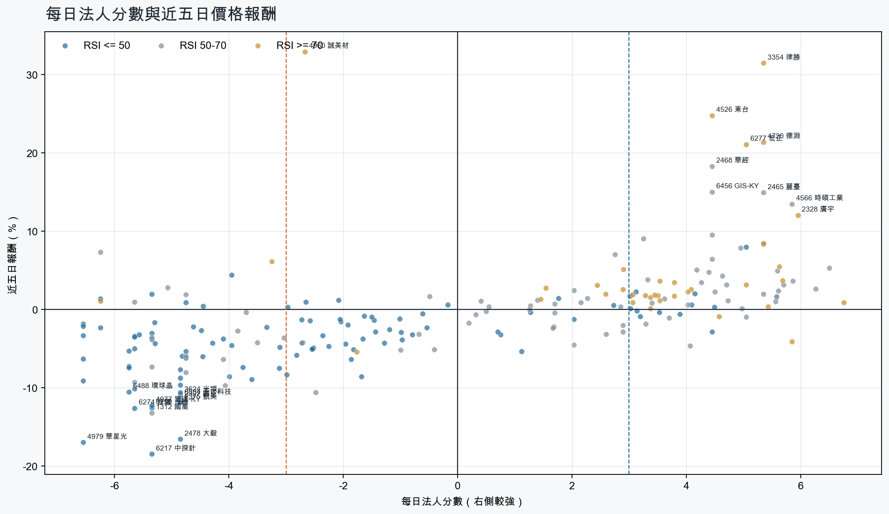
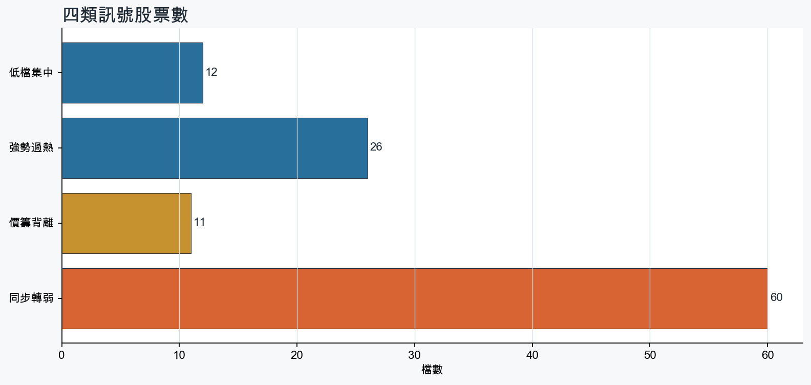
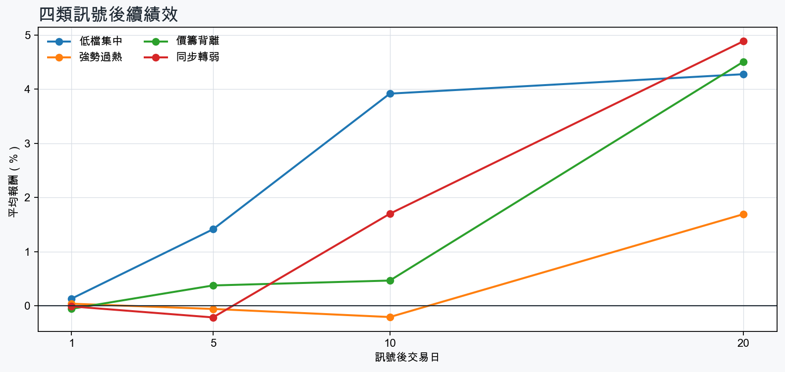

市場情緒偏空
近5日法人合計-5,368,414 張
篩選池上漲比例44.1%
籌碼好 / RSI低12 檔
籌碼差 / 價跌15 檔



EPS × PE VALUATION
法人常用的相對估值
顯示保守、基準與樂觀估值帶，不把單一數字包裝成精準目標價。
最新累計 EPS 依季數年化 × 同產業有效 P/E 的 Q25／中位數／Q75。排除本公司、非正 P/E，並以 1.5×IQR 排除離群值。估值帶是公開資料篩選值，不是法人目標價；未使用分析師預估 EPS。
MOOD × MONEY
情緒與籌碼雷達
熱度代表被討論程度；情緒分與法人方向分開計算。熱門不等於適合追價，樣本不足也不硬判多空。
| 股票 | 情緒 | 討論熱度 | 情緒 × 籌碼 | 情緒 × 基本面 |
|---|---|---|---|---|
| 2317 鴻海低檔集中 | 情緒高漲 +66.5信心 66 | 1001 篇 / 35 留言 / 3 則新聞 | 情籌共振法人分 +3.1 | 基本面與情緒共振基本面分 +3.0 |
| 3354 律勝強勢過熱 | 偏多 +29.0信心 50 | 861 篇 / 19 留言 / 1 則新聞 | 情籌共振法人分 +5.3 | 基本面與情緒分歧基本面分 -0.2 |
| 4979 華星光同步轉弱 | 偏空 -29.7信心 30 | 590 篇 / 0 留言 / 3 則新聞 | 情籌雙弱法人分 -6.5 | 基本面佳、情緒悲觀基本面分 +3.6 |
| 6274 台燿同步轉弱 | 中性分歧 +0.0信心 30 | 590 篇 / 0 留言 / 3 則新聞 | 情籌混合法人分 -5.7 | 基本面與情緒分歧基本面分 +3.6 |
| 3264 欣銓同步轉弱 | 偏多 +29.7信心 30 | 590 篇 / 0 留言 / 3 則新聞 | 熱門但法人撤退法人分 -4.8 | 基本面與情緒共振基本面分 +3.6 |
| 2327 國巨*同步轉弱 | 中性分歧 +0.0信心 30 | 590 篇 / 0 留言 / 3 則新聞 | 情籌混合法人分 -4.8 | 基本面與情緒分歧基本面分 +3.6 |
| 4977 眾達-KY同步轉弱 | 中性分歧 +0.0信心 30 | 590 篇 / 0 留言 / 3 則新聞 | 情籌混合法人分 -5.3 | 基本面與情緒分歧基本面分 +1.8 |
| 6139 亞翔同步轉弱 | 偏多 +29.7信心 30 | 590 篇 / 0 留言 / 3 則新聞 | 熱門但法人撤退法人分 -5.8 | 基本面與情緒共振基本面分 +3.0 |
| 3624 光頡同步轉弱 | 中性分歧 +0.0信心 30 | 590 篇 / 0 留言 / 3 則新聞 | 情籌混合法人分 -4.8 | 基本面與情緒分歧基本面分 +3.6 |
| 1709 和益同步轉弱 | 中性分歧 +0.0信心 30 | 590 篇 / 0 留言 / 3 則新聞 | 情籌混合法人分 -4.8 | 基本面與情緒分歧基本面分 +3.0 |
| 3673 TPK-KY價籌背離 | 偏多 +29.7信心 30 | 590 篇 / 0 留言 / 3 則新聞 | 熱門但法人撤退法人分 -4.0 | 基本面與情緒共振基本面分 +1.8 |
| 2489 瑞軒價籌背離 | 偏多 +29.7信心 30 | 590 篇 / 0 留言 / 3 則新聞 | 熱門但法人撤退法人分 -4.8 | 基本面與情緒共振基本面分 +3.0 |
01
籌碼好 / RSI低
優先研究基本面；法人續買且價格止穩時，才適合分批觀察。
| 股票 / 確認狀態 | 每日法人分 | 浦男式近似 | 法人加速度 | RSI / 相對強弱 | 量價確認 | 融資融券 | 每週集保確認 | 基本面 | EPS × 同業 P/E 估值 | 情緒 / 情籌 | 近期消息 | 論壇討論 |
|---|---|---|---|---|---|---|---|---|---|---|---|---|
| 6173 信昌電等待確認 · 87 分籌碼有訊號，但價格尚未確認 | +4.5法人 +3,640 張 / 3 天 | 接近 · 66中期均線偏多；法人籌碼偏多；法人買盤加速；留意未站月線、明顯弱於大盤 | +3,697 張近3日 +3,669 / 連續 +3 日 | 35.6相對大盤 -8.0% | 量比 2.75確認分 +0.3收盤跌破20日線；近20日弱於大盤 | -5.8%融資 -365 張 / 融券 +730 張 | +34.79 pp1000張 +41.01 pp | 單月營收年增 +54.8%；累計營收年增 +29.3%；2026 Q2 累計 EPS 2.98仍需觀察下一期財報延續性來源：公開資訊觀測站 | 基準 NT$ 153.0估值帶 103.8–250.5現價 293.5 · 高於估值帶 · 距基準 -47.9%2026 Q2 累計 EPS 2.98 → 年化 5.96電子零組件同業 P/E 17.42／25.67／42.03 · n=147 · 信心中等以 Q2 累計 EPS 年化，不等同分析師全年預估來源：TWSE／TPEx 每日本益比 | 中性分歧 +0.0熱度 59 / 信心 30情籌混合 | 【即時新聞】信昌電(6173)爆量亮燈！這「3檔概念股」同步遭調節！CMoney投資網誌 · 10/22【即時新聞】信昌電(6173)多空交戰劇烈，這「5檔概念股」湧現賣壓遭調節！CMoney投資網誌 · 10/22 | 近期沒有明確提及本股的論壇樣本 |
| 3231 緯創可研究 · 97 分籌碼與價格確認，可列研究清單 | +5.0法人 +71,157 張 / 4 天 | 命中 · 95站上月線；中期均線偏多；法人籌碼偏多；留意量能尚未確認 | +104,048 張近3日 +67,264 / 連續 +3 日 | 49.6相對大盤 +4.3% | 量比 0.88確認分 +4.8價格、量能與籌碼未見明顯弱項 | -%融資 - 張 / 融券 - 張 | -2.38 pp1000張 -2.43 pp | 單月營收年增 +87.2%；累計營收年增 +97.2%；2026 Q2 累計 EPS 7.782026 Q2 累計營益率 3.6%來源：公開資訊觀測站 | 基準 NT$ 266.4估值帶 194.0–388.8現價 190.0 · 低於估值帶 · 距基準 +40.2%2026 Q2 累計 EPS 7.78 → 年化 15.56電腦及週邊同業 P/E 12.47／17.12／24.99 · n=80 · 信心中等以 Q2 累計 EPS 年化，不等同分析師全年預估來源：TWSE／TPEx 每日本益比 | 中性分歧 +0.0熱度 59 / 信心 30情籌混合 | 3231 緯創 - 輝達 - 股市爆料同學會CMoney · 10/22三大法人買賣超 – 外資買超(3231)緯創、(3026)禾伸堂，投信買超(3017)奇鋐、(2330)台積電，法人合計賣超968.04億元永豐金證券 · 10/22 | 近期沒有明確提及本股的論壇樣本 |
| 3702 大聯大可研究 · 87 分籌碼與價格確認，可列研究清單 | +3.2法人 +5,848 張 / 4 天 | 接近 · 81中期均線偏多；法人籌碼偏多；法人買盤加速；留意未站月線、動能位置非最佳 | +2,666 張近3日 +5,234 / 連續 +3 日 | 36.4相對大盤 +2.9% | 量比 0.93確認分 +3.1收盤跌破20日線 | -%融資 - 張 / 融券 - 張 | +0.30 pp1000張 +0.40 pp | 單月營收年增 +146.5%；累計營收年增 +72.5%；2026 Q2 累計 EPS 8.422026 Q2 累計營益率 2.6%來源：公開資訊觀測站 | 基準 NT$ 206.5估值帶 168.9–355.7現價 114.5 · 低於估值帶 · 距基準 +80.3%2026 Q2 累計 EPS 8.42 → 年化 16.84電子通路同業 P/E 10.03／12.26／21.12 · n=30 · 信心中等以 Q2 累計 EPS 年化，不等同分析師全年預估來源：TWSE／TPEx 每日本益比 | 樣本不足 +0.0熱度 0 / 信心 0情緒樣本不足 | 近期沒有通過股票語境篩選的新聞 | 近期沒有明確提及本股的論壇樣本 |
| 8112 至上可研究 · 80 分籌碼與價格確認，可列研究清單 | +3.0法人 +2,785 張 / 4 天 | 接近 · 85站上月線；法人籌碼偏多；法人買盤加速；留意中期均線未翻多、量能尚未確認 | +5,565 張近3日 +3,126 / 連續 +3 日 | 50.0相對大盤 +3.3% | 量比 0.70確認分 +3.120日線低於60日線 | -%融資 - 張 / 融券 - 張 | -2.70 pp1000張 -3.19 pp | 單月營收年增 +233.5%；累計營收年增 +184.5%；2026 Q2 累計 EPS 9.452026 Q2 累計營益率 3.2%來源：公開資訊觀測站 | 基準 NT$ 231.7估值帶 189.6–399.2現價 83.80 · 低於估值帶 · 距基準 +176.5%2026 Q2 累計 EPS 9.45 → 年化 18.90電子通路同業 P/E 10.03／12.26／21.12 · n=30 · 信心中等以 Q2 累計 EPS 年化，不等同分析師全年預估來源：TWSE／TPEx 每日本益比 | 樣本不足 +0.0熱度 0 / 信心 0情緒樣本不足 | 近期沒有通過股票語境篩選的新聞 | 近期沒有明確提及本股的論壇樣本 |
| 2317 鴻海等待確認 · 70 分籌碼有訊號，但價格尚未確認 | +3.1法人 +44,567 張 / 4 天 | 接近 · 66法人籌碼偏多；法人買盤加速；買超具延續性；留意未站月線、中期均線未翻多 | +35,464 張近3日 +34,930 / 連續 +3 日 | 41.8相對大盤 +0.4% | 量比 0.67確認分 +0.3收盤跌破20日線；20日線低於60日線 | -%融資 - 張 / 融券 - 張 | -0.65 pp1000張 -0.72 pp | 單月營收年增 +38.4%；累計營收年增 +39.5%；2026 Q2 累計 EPS 7.842026 Q2 累計營益率 3.7%來源：公開資訊觀測站 | 基準 NT$ 309.5估值帶 224.1–498.3現價 245.0 · 估值帶內 · 距基準 +26.3%2026 Q2 累計 EPS 7.84 → 年化 15.68其他電子同業 P/E 14.29／19.74／31.78 · n=65 · 信心中等以 Q2 累計 EPS 年化，不等同分析師全年預估來源：TWSE／TPEx 每日本益比 | 情緒高漲 +66.5熱度 100 / 信心 66情籌共振 | 中美AI出口管制同步升溫，鴻海、廣達、台積電面臨哪些合規與訂單風險？｜股市話題｜豐雲學堂2026 年 10 月永豐金證券 · 10/22蘋果營運長親訪鄭州富士康！鴻海與蘋果供應鏈合作再受矚目財訊 · 10/22 | [新聞] 鴻海/三菱電機車用合資公司營收拼1兆日圓PTT Stock · 10-20 · 35 留言 |
| 2376 技嘉等待確認 · 62 分籌碼有訊號，但價格尚未確認 | +4.1法人 +3,744 張 / 4 天 | 接近 · 70中期均線偏多；法人籌碼偏多；法人買盤加速；留意未站月線、相對強度普通 | +116 張近3日 +1,788 / 連續 +3 日 | 39.7相對大盤 -2.8% | 量比 0.71確認分 -2.2收盤跌破20日線 | -%融資 - 張 / 融券 - 張 | -0.09 pp1000張 -0.04 pp | 單月營收年增 +125.4%；累計營收年增 +63.2%；2026 Q2 累計 EPS 17.732026 Q2 累計營益率 6.2%來源：公開資訊觀測站 | 基準 NT$ 607.1估值帶 442.2–886.1現價 349.0 · 低於估值帶 · 距基準 +74.0%2026 Q2 累計 EPS 17.73 → 年化 35.46電腦及週邊同業 P/E 12.47／17.12／24.99 · n=80 · 信心中等以 Q2 累計 EPS 年化，不等同分析師全年預估來源：TWSE／TPEx 每日本益比 | 樣本不足 +9.9熱度 35 / 信心 10情緒樣本不足 | 電腦及週邊設備產業鏈／技嘉9月營收年增125%創新高！Q3營收突破1500億元科技島 · 10/22 | 近期沒有明確提及本股的論壇樣本 |
| 3714 富采等待確認 · 65 分籌碼有訊號，但價格尚未確認 | +4.5法人 +3,211 張 / 5 天 | 未命中 · 57中期均線偏多；法人籌碼偏多；法人買盤加速；留意未站月線、明顯弱於大盤 | +909 張近3日 +1,910 / 連續 +5 日 | 35.4相對大盤 -7.9% | 量比 0.51確認分 -1.3收盤跌破20日線；近20日弱於大盤；成交量不足 | -%融資 - 張 / 融券 - 張 | -0.14 pp1000張 +0.12 pp | 單月營收年增 +18.8%；累計營收年增 +7.5%；2026 Q2 累計 EPS 1.492026 Q2 累計營益率 -5.9%來源：公開資訊觀測站 | 基準 NT$ 74.08估值帶 37.28–115.1現價 61.70 · 估值帶內 · 距基準 +20.1%2026 Q2 累計 EPS 1.49 → 年化 2.98光電同業 P/E 12.51／24.86／38.62 · n=69 · 信心較低以 Q2 累計 EPS 年化，不等同分析師全年預估；交易所無有效本益比，無法交叉檢核近四季 EPS來源：TWSE／TPEx 每日本益比 | 樣本不足 +0.0熱度 35 / 信心 10情緒樣本不足 | 3714 富采 - 下禮拜負慘跟穎崴都腰斬？ - 股市爆料同學會CMoney · 10/22 | 近期沒有明確提及本股的論壇樣本 |
| 2382 廣達等待確認 · 64 分籌碼有訊號，但價格尚未確認 | +3.0法人 +11,883 張 / 4 天 | 接近 · 66中期均線偏多；法人籌碼偏多；法人買盤加速；留意未站月線、明顯弱於大盤 | +11,310 張近3日 +11,084 / 連續 +3 日 | 40.2相對大盤 -4.1% | 量比 0.80確認分 -0.8收盤跌破20日線；近20日弱於大盤 | -%融資 - 張 / 融券 - 張 | -0.74 pp1000張 -0.66 pp | 單月營收年增 +76.7%；累計營收年增 +99.4%；2026 Q2 累計 EPS 12.932026 Q2 累計營益率 3.1%來源：公開資訊觀測站 | 基準 NT$ 442.7估值帶 322.5–646.2現價 322.0 · 低於估值帶 · 距基準 +37.5%2026 Q2 累計 EPS 12.93 → 年化 25.86電腦及週邊同業 P/E 12.47／17.12／24.99 · n=80 · 信心中等以 Q2 累計 EPS 年化，不等同分析師全年預估來源：TWSE／TPEx 每日本益比 | 樣本不足 +9.9熱度 35 / 信心 10情緒樣本不足 | 中美AI出口管制同步升溫，鴻海、廣達、台積電面臨哪些合規與訂單風險？｜股市話題｜豐雲學堂2026 年 10 月永豐金證券 · 10/22 | 近期沒有明確提及本股的論壇樣本 |
| 2634 漢翔等待確認 · 60 分籌碼有訊號，但價格尚未確認 | +3.5法人 +5,849 張 / 4 天 | 未命中 · 50法人籌碼偏多；法人買盤加速；買超具延續性；留意未站月線、中期均線未翻多 | +719 張近3日 +2,844 / 連續 +3 日 | 34.6相對大盤 -2.6% | 量比 0.66確認分 -1.4收盤跌破20日線；20日線低於60日線 | -%融資 - 張 / 融券 - 張 | -0.24 pp1000張 -0.56 pp | 累計營收年增 +7.2%；2026 Q2 累計 EPS 1.30；2026 Q2 累計營益率 10.0%單月營收年增 -6.7%來源：公開資訊觀測站 | 基準 NT$ 27.92估值帶 23.74–36.24現價 60.50 · 高於估值帶 · 距基準 -53.8%2026 Q2 累計 EPS 1.30 → 年化 2.60航運業同業 P/E 9.13／10.74／13.94 · n=25 · 信心中等以 Q2 累計 EPS 年化，不等同分析師全年預估來源：TWSE／TPEx 每日本益比 | 中性分歧 +0.0熱度 59 / 信心 30情籌混合 | 漢翔(2634)打造電力島！年省40%電費，台積電有望成客戶？數位時代 · 10/222634 漢翔- 年省四成能源成本漢翔9MW/54MWh 電力島正式啟用- 股市爆料同學會CMoney · 10/22 | 近期沒有明確提及本股的論壇樣本 |
| 2354 鴻準等待確認 · 60 分籌碼有訊號，但價格尚未確認 | +3.1法人 +4,573 張 / 4 天 | 接近 · 61中期均線偏多；法人籌碼偏多；法人買盤加速；留意未站月線、相對強度普通 | +4,352 張近3日 +4,346 / 連續 +3 日 | 36.2相對大盤 -2.0% | 量比 0.40確認分 -0.9收盤跌破20日線；成交量不足 | -%融資 - 張 / 融券 - 張 | -1.23 pp1000張 -1.42 pp | 單月營收年增 +11.2%；2026 Q2 累計 EPS 1.10累計營收年增 -0.2%；2026 Q2 累計營益率 1.3%來源：公開資訊觀測站 | 基準 NT$ 42.22估值帶 31.44–69.92現價 62.00 · 估值帶內 · 距基準 -31.9%2026 Q2 累計 EPS 1.10 → 年化 2.20其他電子同業 P/E 14.29／19.19／31.78 · n=65 · 信心中等以 Q2 累計 EPS 年化，不等同分析師全年預估來源：TWSE／TPEx 每日本益比 | 樣本不足 +0.0熱度 35 / 信心 10情緒樣本不足 | 【鴻準法說會重點內容備忘錄】未來展望趨勢 20260930富果直送 · 09/30 | 近期沒有明確提及本股的論壇樣本 |
| 4916 事欣科等待確認 · 49 分籌碼有訊號，但價格尚未確認 | +4.2法人 +1,846 張 / 3 天 | 接近 · 63中期均線偏多；法人籌碼偏多；買超具延續性；留意未站月線、法人買盤未加速 | -492 張近3日 +526 / 連續 -1 日 | 43.7相對大盤 -2.7% | 量比 0.84確認分 -4.4收盤跌破20日線；法人買盤減速 | -%融資 - 張 / 融券 - 張 | -1.11 pp1000張 -1.50 pp | 單月營收年增 +70.3%；累計營收年增 +63.0%；2026 Q2 累計 EPS 5.45仍需觀察下一期財報延續性來源：公開資訊觀測站 | 基準 NT$ 186.6估值帶 135.9–272.4現價 99.60 · 低於估值帶 · 距基準 +87.4%2026 Q2 累計 EPS 5.45 → 年化 10.90電腦及週邊同業 P/E 12.47／17.12／24.99 · n=80 · 信心中等以 Q2 累計 EPS 年化，不等同分析師全年預估來源：TWSE／TPEx 每日本益比 | 樣本不足 +0.0熱度 35 / 信心 10情緒樣本不足 | 4916 事欣科 - 好了啦一堆傻🐸要照片 等你們敢在最高點時候做空 再來質疑�... - 股市爆料同學會CMoney · 10/22 | 近期沒有明確提及本股的論壇樣本 |
| 9910 豐泰等待確認 · 51 分籌碼有訊號，但價格尚未確認 | +3.9法人 +4,788 張 / 5 天 | 未命中 · 51法人籌碼偏多；買超具延續性；相對大盤偏強；留意未站月線、中期均線未翻多 | -1,356 張近3日 +2,260 / 連續 +9 日 | 43.8相對大盤 +1.4% | 量比 0.74確認分 -3.1收盤跌破20日線；20日線低於60日線；法人買盤減速 | -%融資 - 張 / 融券 - 張 | -0.22 pp1000張 -0.35 pp | 2026 Q2 累計 EPS 1.71單月營收年增 -4.8%；累計營收年增 -3.1%；2026 Q2 累計營益率 5.0%來源：公開資訊觀測站 | 基準 NT$ 40.42估值帶 31.81–48.67現價 67.70 · 高於估值帶 · 距基準 -40.3%2026 Q2 累計 EPS 1.71 → 年化 3.42運動休閒同業 P/E 9.30／11.82／14.23 · n=20 · 信心中等以 Q2 累計 EPS 年化，不等同分析師全年預估來源：TWSE／TPEx 每日本益比 | 樣本不足 +0.0熱度 0 / 信心 0情緒樣本不足 | 近期沒有通過股票語境篩選的新聞 | 近期沒有明確提及本股的論壇樣本 |
02
籌碼好 / RSI高
趨勢強但不追價，等待量縮、RSI降溫或回測支撐。
| 股票 / 確認狀態 | 每日法人分 | 浦男式近似 | 法人加速度 | RSI / 相對強弱 | 量價確認 | 融資融券 | 每週集保確認 | 基本面 | EPS × 同業 P/E 估值 | 情緒 / 情籌 | 近期消息 | 論壇討論 |
|---|---|---|---|---|---|---|---|---|---|---|---|---|
| 6278 台表科等待拉回 · 100 分等拉回，不追價 | +5.8法人 +7,938 張 / 4 天 | 命中 · 89站上月線；中期均線偏多；法人籌碼偏多；留意法人買盤未加速、動能位置非最佳 | -14,294 張近3日 +2,470 / 連續 +1 日 | 70.8相對大盤 +51.8% | 量比 1.27確認分 +2.5法人買盤減速 | -%融資 - 張 / 融券 - 張 | +11.71 pp1000張 +12.77 pp | 單月營收年增 +15.9%；累計營收年增 +6.5%；2026 Q2 累計 EPS 4.932026 Q2 累計營益率 6.0%來源：公開資訊觀測站 | 基準 NT$ 238.2估值帶 122.4–383.6現價 290.5 · 估值帶內 · 距基準 -18.0%2026 Q2 累計 EPS 4.93 → 年化 9.86光電同業 P/E 12.41／24.16／38.91 · n=68 · 信心中等以 Q2 累計 EPS 年化，不等同分析師全年預估來源：TWSE／TPEx 每日本益比 | 偏空 -29.7熱度 59 / 信心 30法人布局、市場悲觀 | 台表科(6278)毛利率谷底反彈？1.6T光通訊提前布局，2027年營收占比挑戰20%優分析UAnalyze · 10/22光電股成一片綠海！「這檔」仍逆勢再刷天價、GIS連3漲攻上百元台表科重挫8%、今國光摔到跌停FTNN 新聞網 · 10/22 | 近期沒有明確提及本股的論壇樣本 |
| 4938 和碩等待拉回 · 100 分等拉回，不追價 | +5.6法人 +24,611 張 / 5 天 | 命中 · 91站上月線；中期均線偏多；法人籌碼偏多；留意量能尚未確認、動能位置非最佳 | +4,138 張近3日 +14,264 / 連續 +5 日 | 73.2相對大盤 +16.4% | 量比 0.72確認分 +5.7價格、量能與籌碼未見明顯弱項 | -%融資 - 張 / 融券 - 張 | +0.60 pp1000張 +0.72 pp | 單月營收年增 +86.9%；累計營收年增 +13.8%；2026 Q2 累計 EPS 2.262026 Q2 累計營益率 1.4%來源：公開資訊觀測站 | 基準 NT$ 75.62估值帶 56.36–113.0現價 103.5 · 估值帶內 · 距基準 -26.9%2026 Q2 累計 EPS 2.26 → 年化 4.52電腦及週邊同業 P/E 12.47／16.73／24.99 · n=80 · 信心中等以 Q2 累計 EPS 年化，不等同分析師全年預估來源：TWSE／TPEx 每日本益比 | 樣本不足 +0.0熱度 0 / 信心 0情緒樣本不足 | 近期沒有通過股票語境篩選的新聞 | 近期沒有明確提及本股的論壇樣本 |
| 3005 神基等待拉回 · 100 分等拉回，不追價 | +5.7法人 +5,834 張 / 5 天 | 命中 · 96站上月線；中期均線偏多；法人籌碼偏多；留意動能位置非最佳 | +189 張近3日 +3,855 / 連續 +10 日 | 76.7相對大盤 +7.9% | 量比 1.70確認分 +4.8價格、量能與籌碼未見明顯弱項 | -%融資 - 張 / 融券 - 張 | +0.42 pp1000張 +0.18 pp | 單月營收年增 +16.3%；累計營收年增 +10.7%；2026 Q2 累計 EPS 4.27仍需觀察下一期財報延續性來源：公開資訊觀測站 | 基準 NT$ 146.2估值帶 106.5–213.4現價 125.5 · 估值帶內 · 距基準 +16.5%2026 Q2 累計 EPS 4.27 → 年化 8.54電腦及週邊同業 P/E 12.47／17.12／24.99 · n=80 · 信心中等以 Q2 累計 EPS 年化，不等同分析師全年預估來源：TWSE／TPEx 每日本益比 | 偏多 +29.7熱度 59 / 信心 30情籌共振 | 【12:40 即時新聞】神基(3005)盤中續強，高殖利率題材受關注CMoney投資網誌 · 10/20《外資買超31-11》神基(1000)、鼎元(975)、中磊(947)富聯網 · 10/22 | 近期沒有明確提及本股的論壇樣本 |
| 4720 德淵等待拉回 · 100 分等拉回，不追價 | +5.3法人 +7,473 張 / 4 天 | 命中 · 91站上月線；中期均線偏多；法人籌碼偏多；留意量能尚未確認、動能位置非最佳 | +9,018 張近3日 +8,268 / 連續 +4 日 | 77.5相對大盤 +60.7% | 量比 2.75確認分 +5.8價格、量能與籌碼未見明顯弱項 | -%融資 - 張 / 融券 - 張 | -0.30 pp1000張 -0.44 pp | 單月營收年增 +33.0%；累計營收年增 +16.4%；2026 Q2 累計 EPS 0.132026 Q2 累計營益率 1.3%來源：公開資訊觀測站 | 基準 NT$ 4.98估值帶 3.42–7.15現價 30.95 · 高於估值帶 · 距基準 -83.9%2026 Q2 累計 EPS 0.13 → 年化 0.26化學工業同業 P/E 13.14／19.14／27.51 · n=33 · 信心較低以 Q2 累計 EPS 年化，不等同分析師全年預估；年化 EPS 為交易所近四季 EPS 的 0.46 倍，需保守解讀來源：TWSE／TPEx 每日本益比 | 偏多 +29.7熱度 59 / 信心 30情籌共振 | 價量齊揚法人加碼16檔 最愛德淵、濱川 「這檔」喜獲連7買工商時報 · 10/22Google、輝達量子運算技術突破！金仁寶家族「這成員」一度亮燈入榜 德淵漲停加冕量價雙增王FTNN 新聞網 · 10/22 | 近期沒有明確提及本股的論壇樣本 |
| 2912 統一超等待拉回 · 90 分等拉回，不追價 | +6.8法人 +11,192 張 / 5 天 | 接近 · 70站上月線；法人籌碼偏多；買超具延續性；留意中期均線未翻多、法人買盤未加速 | -11,761 張近3日 +2,351 / 連續 +10 日 | 74.5相對大盤 +7.5% | 量比 0.81確認分 +1.620日線低於60日線；法人買盤減速 | -%融資 - 張 / 融券 - 張 | -0.13 pp1000張 -0.27 pp | 單月營收年增 +7.8%；累計營收年增 +5.7%；2026 Q2 累計 EPS 6.032026 Q2 累計營益率 4.2%來源：公開資訊觀測站 | 基準 NT$ 165.7估值帶 95.88–211.4現價 226.0 · 高於估值帶 · 距基準 -26.7%2026 Q2 累計 EPS 6.03 → 年化 12.06貿易百貨同業 P/E 7.95／13.74／17.53 · n=10 · 信心中等以 Q2 累計 EPS 年化，不等同分析師全年預估來源：TWSE／TPEx 每日本益比 | 偏多 +29.7熱度 59 / 信心 30情籌共振 | 2912 統一超- 7-ELEVEN 聯名日本爆紅Loveez！5大主題店登場、30款新品一次看- 股市爆料同學會CMoney · 10/22【13:16 即時新聞】統一超(2912)盤中穩步走強，買盤聚焦法人與主力同步偏多CMoney投資網誌 · 10/19 | 近期沒有明確提及本股的論壇樣本 |
| 1569 濱川等待拉回 · 100 分等拉回，不追價 | +5.3法人 +2,747 張 / 4 天 | 接近 · 70站上月線；中期均線偏多；法人籌碼偏多；留意量能尚未確認、基本面偏弱 | +1,744 張近3日 +2,615 / 連續 +4 日 | 78.3相對大盤 +43.7% | 量比 2.68確認分 +5.8價格、量能與籌碼未見明顯弱項 | -0.7%融資 -87 張 / 融券 +103 張 | +5.90 pp1000張 +4.95 pp | 單月營收年增 +39.1%累計營收年增 -2.3%；2026 Q2 累計 EPS -1.67；2026 Q2 累計營益率 -10.7%來源：公開資訊觀測站 | 不適用年化 EPS 非正數，不適合使用本益比估值 | 偏多 +29.7熱度 59 / 信心 30情籌共振 | 【即時新聞】濱川(1569)獲法人連買亮燈漲停！這「5檔概念股」資金輪動爆分歧？CMoney投資網誌 · 10/22價量齊揚法人加碼16檔 最愛德淵、濱川 「這檔」喜獲連7買工商時報 · 10/22 | 近期沒有明確提及本股的論壇樣本 |
| 2328 廣宇等待拉回 · 100 分等拉回，不追價 | +6.0法人 +13,416 張 / 5 天 | 接近 · 71站上月線；中期均線偏多；法人籌碼偏多；留意量能異常、基本面偏弱 | +12,829 張近3日 +12,740 / 連續 +5 日 | 74.9相對大盤 +14.7% | 量比 5.96確認分 +5.3價格、量能與籌碼未見明顯弱項 | -%融資 - 張 / 融券 - 張 | +1.34 pp1000張 +0.52 pp | 單月營收年增 +34.3%累計營收年增 -3.3%；2026 Q2 累計 EPS -0.24；2026 Q2 累計營益率 0.0%來源：公開資訊觀測站 | 不適用年化 EPS 非正數，不適合使用本益比估值 | 中性分歧 +0.0熱度 59 / 信心 30情籌混合 | 廣宇營收增長開始加溫，AI伺服器機櫃貢獻起跑- 新聞MoneyDJ理財網 · 09/22【即時新聞】廣宇(2328)跨足機器人迎轉機，這「5檔概念股」卻爆調節賣壓！CMoney投資網誌 · 10/22 | 近期沒有明確提及本股的論壇樣本 |
| 9904 寶成等待拉回 · 88 分等拉回，不追價 | +5.4法人 +25,673 張 / 5 天 | 命中 · 80站上月線；中期均線偏多；法人籌碼偏多；留意法人買盤未加速、量能尚未確認 | -17,523 張近3日 +10,989 / 連續 +10 日 | 73.4相對大盤 +8.4% | 量比 0.84確認分 +1.8法人買盤減速 | -%融資 - 張 / 融券 - 張 | +1.36 pp1000張 +1.31 pp | 單月營收年增 +10.4%；2026 Q2 累計 EPS 2.37累計營收年增 -0.5%；2026 Q2 累計營益率 2.3%來源：公開資訊觀測站 | 基準 NT$ 58.49估值帶 51.10–69.11現價 26.35 · 低於估值帶 · 距基準 +122.0%2026 Q2 累計 EPS 2.37 → 年化 4.74運動休閒同業 P/E 10.78／12.34／14.58 · n=19 · 信心中等以 Q2 累計 EPS 年化，不等同分析師全年預估來源：TWSE／TPEx 每日本益比 | 樣本不足 +0.0熱度 35 / 信心 10情緒樣本不足 | 台股崩跌融資洗乾淨了？分析師揭「止穩3關鍵訊號」 點名台泥、寶成、遠東銀…10檔「黃金右下角」首選股- 上市櫃旺得富理財網 · 10/19 | 近期沒有明確提及本股的論壇樣本 |
| 2006 東和鋼鐵等待拉回 · 96 分等拉回，不追價 | +3.8法人 +1,899 張 / 5 天 | 命中 · 89站上月線；中期均線偏多；法人籌碼偏多；留意法人買盤未加速、動能位置非最佳 | -4 張近3日 +1,255 / 連續 +9 日 | 76.9相對大盤 +11.4% | 量比 1.32確認分 +4.5法人買盤減速 | -%融資 - 張 / 融券 - 張 | +0.24 pp1000張 -0.47 pp | 單月營收年增 +13.8%；累計營收年增 +3.6%；2026 Q2 累計 EPS 4.07仍需觀察下一期財報延續性來源：公開資訊觀測站 | 基準 NT$ 103.5估值帶 86.12–126.8現價 93.20 · 估值帶內 · 距基準 +11.0%2026 Q2 累計 EPS 4.07 → 年化 8.14鋼鐵工業同業 P/E 10.58／12.71／15.58 · n=27 · 信心中等以 Q2 累計 EPS 年化，不等同分析師全年預估來源：TWSE／TPEx 每日本益比 | 偏多 +29.7熱度 59 / 信心 30情籌共振 | 個股：科技廠房建廠需求強勁帶動，東和鋼鐵(2006)2027年案量充沛、動能續航富聯網 · 10/22【東和鋼鐵法說會重點內容備忘錄】未來展望趨勢 20260916富果直送 · 09/16 | 近期沒有明確提及本股的論壇樣本 |
| 3354 律勝等待拉回 · 100 分等拉回，不追價 | +5.3法人 +2,158 張 / 4 天 | 接近 · 75站上月線；中期均線偏多；法人籌碼偏多；留意基本面偏弱、RSI過熱 | +519 張近3日 +1,820 / 連續 +1 日 | 78.2相對大盤 +66.7% | 量比 0.97確認分 +5.9融資單日增幅偏高 | +22.7%融資 +381 張 / 融券 -60 張 | +2.16 pp1000張 +0.00 pp | 單月營收年增 +37.5%；累計營收年增 +31.5%2026 Q2 累計 EPS -0.29；2026 Q2 累計營益率 -42.9%來源：公開資訊觀測站 | 不適用年化 EPS 非正數，不適合使用本益比估值 | 偏多 +29.0熱度 86 / 信心 50情籌共振 | 漲停後遭關禁閉 PCB材料廠律勝早盤重摔逾8%TVBS新聞網 · 10/22 | [情報] 3354 律勝 9月自結:-0.10 連6漲停中PTT Stock · 10-21 · 19 留言 |
| 2393 億光等待拉回 · 86 分等拉回，不追價 | +4.6法人 +2,017 張 / 5 天 | 命中 · 84站上月線；中期均線偏多；法人籌碼偏多；留意法人買盤未加速、量能尚未確認 | -576 張近3日 +1,114 / 連續 +8 日 | 73.9相對大盤 +8.0% | 量比 0.73確認分 +2.1法人買盤減速 | -%融資 - 張 / 融券 - 張 | +0.53 pp1000張 +0.50 pp | 單月營收年增 +18.6%；累計營收年增 +7.6%；2026 Q2 累計 EPS 2.14仍需觀察下一期財報延續性來源：公開資訊觀測站 | 基準 NT$ 107.2估值帶 53.11–166.5現價 67.80 · 估值帶內 · 距基準 +58.1%2026 Q2 累計 EPS 2.14 → 年化 4.28光電同業 P/E 12.41／25.05／38.91 · n=68 · 信心中等以 Q2 累計 EPS 年化，不等同分析師全年預估來源：TWSE／TPEx 每日本益比 | 樣本不足 +0.0熱度 0 / 信心 0情緒樣本不足 | 近期沒有通過股票語境篩選的新聞 | 近期沒有明確提及本股的論壇樣本 |
| 2377 微星等待拉回 · 85 分等拉回，不追價 | +5.0法人 +13,338 張 / 4 天 | 命中 · 80站上月線；中期均線偏多；法人籌碼偏多；留意法人買盤未加速、量能尚未確認 | -2,354 張近3日 +7,689 / 連續 +3 日 | 72.3相對大盤 +8.9% | 量比 0.86確認分 +1.8法人買盤減速 | -%融資 - 張 / 融券 - 張 | +1.89 pp1000張 +1.02 pp | 單月營收年增 +1.8%；2026 Q2 累計 EPS 7.59累計營收年增 -5.5%；2026 Q2 累計營益率 6.7%來源：公開資訊觀測站 | 基準 NT$ 259.9估值帶 189.3–379.4現價 163.0 · 低於估值帶 · 距基準 +59.4%2026 Q2 累計 EPS 7.59 → 年化 15.18電腦及週邊同業 P/E 12.47／17.12／24.99 · n=80 · 信心中等以 Q2 累計 EPS 年化，不等同分析師全年預估來源：TWSE／TPEx 每日本益比 | 樣本不足 +0.0熱度 0 / 信心 0情緒樣本不足 | 近期沒有通過股票語境篩選的新聞 | 近期沒有明確提及本股的論壇樣本 |
| 2633 台灣高鐵等待拉回 · 88 分等拉回，不追價 | +3.5法人 +11,129 張 / 5 天 | 接近 · 79站上月線；法人籌碼偏多；買超具延續性；留意中期均線未翻多、法人買盤未加速 | -3,396 張近3日 +6,278 / 連續 +6 日 | 70.6相對大盤 +5.5% | 量比 1.34確認分 +3.120日線低於60日線；法人買盤減速 | -%融資 - 張 / 融券 - 張 | -0.04 pp1000張 -0.09 pp | 單月營收年增 +11.4%；累計營收年增 +4.2%；2026 Q2 累計 EPS 0.67仍需觀察下一期財報延續性來源：公開資訊觀測站 | 基準 NT$ 14.12估值帶 12.15–17.65現價 26.50 · 高於估值帶 · 距基準 -46.7%2026 Q2 累計 EPS 0.67 → 年化 1.34航運業同業 P/E 9.07／10.54／13.17 · n=24 · 信心中等以 Q2 累計 EPS 年化，不等同分析師全年預估來源：TWSE／TPEx 每日本益比 | 樣本不足 +0.0熱度 0 / 信心 0情緒樣本不足 | 近期沒有通過股票語境篩選的新聞 | 近期沒有明確提及本股的論壇樣本 |
| 2801 彰銀等待拉回 · 91 分等拉回，不追價 | +4.1法人 +40,080 張 / 5 天 | 命中 · 89站上月線；中期均線偏多；法人籌碼偏多；留意法人買盤未加速、動能位置非最佳 | -7,192 張近3日 +23,142 / 連續 +10 日 | 77.0相對大盤 +7.5% | 量比 1.02確認分 +3.6法人買盤減速 | -%融資 - 張 / 融券 - 張 | +0.13 pp1000張 +0.28 pp | 單月營收年增 +12.8%；累計營收年增 +14.2%；2026 Q2 累計 EPS 0.94仍需觀察下一期財報延續性來源：公開資訊觀測站 | 基準 NT$ 24.74估值帶 12.82–29.50現價 29.90 · 高於估值帶 · 距基準 -17.2%2026 Q2 累計 EPS 0.94 → 年化 1.88金融保險同業 P/E 6.82／13.16／15.69 · n=39 · 信心中等以 Q2 累計 EPS 年化，不等同分析師全年預估來源：TWSE／TPEx 每日本益比 | 樣本不足 +0.0熱度 0 / 信心 0情緒樣本不足 | 近期沒有通過股票語境篩選的新聞 | 近期沒有明確提及本股的論壇樣本 |
| 2892 第一金等待拉回 · 90 分等拉回，不追價 | +3.3法人 +19,004 張 / 5 天 | 命中 · 85站上月線；中期均線偏多；法人籌碼偏多；留意法人買盤未加速、動能位置非最佳 | -2,322 張近3日 +15,235 / 連續 +10 日 | 75.5相對大盤 +9.0% | 量比 1.05確認分 +4.3法人買盤減速 | -%融資 - 張 / 融券 - 張 | +0.32 pp1000張 +0.32 pp | 累計營收年增 +15.8%；2026 Q2 累計 EPS 1.24單月營收年增 -1.3%來源：公開資訊觀測站 | 基準 NT$ 32.64估值帶 16.91–38.91現價 42.35 · 高於估值帶 · 距基準 -22.9%2026 Q2 累計 EPS 1.24 → 年化 2.48金融保險同業 P/E 6.82／13.16／15.69 · n=39 · 信心中等以 Q2 累計 EPS 年化，不等同分析師全年預估來源：TWSE／TPEx 每日本益比 | 中性分歧 +0.0熱度 59 / 信心 30情籌混合 | 4大公股投信整併案拍板！第一金控持股50.3% 第一金投信存續鉅亨網 · 10/22四大公股旗下投信宣布整併 第一金投信擔任存續公司你的公共電視 · 10/22 | 近期沒有明確提及本股的論壇樣本 |
03
籌碼差 / 股價上漲
可能是事件行情或軋空；沒有籌碼改善前避免追高。
| 股票 / 確認狀態 | 每日法人分 | 浦男式近似 | 法人加速度 | RSI / 相對強弱 | 量價確認 | 融資融券 | 每週集保確認 | 基本面 | EPS × 同業 P/E 估值 | 情緒 / 情籌 | 近期消息 | 論壇討論 |
|---|---|---|---|---|---|---|---|---|---|---|---|---|
| 5498 凱崴風險警示 · 65 分背離警戒，避免追高 | -6.2法人 -2,597 張 / 0 天 | 接近 · 82站上月線；中期均線偏多；法人買盤加速；留意法人籌碼偏弱、買超延續不足 | +2,096 張近3日 -700 / 連續 -6 日 | 61.0相對大盤 +13.9% | 量比 1.75確認分 +6.5價格、量能與籌碼未見明顯弱項 | -1.9%融資 -148 張 / 融券 -159 張 | +0.17 pp1000張 -0.57 pp | 單月營收年增 +78.7%；累計營收年增 +71.8%；2026 Q2 累計 EPS 0.182026 Q2 累計營益率 6.4%來源：公開資訊觀測站 | 基準 NT$ 9.31估值帶 6.30–15.23現價 58.40 · 高於估值帶 · 距基準 -84.1%2026 Q2 累計 EPS 0.18 → 年化 0.36電子零組件同業 P/E 17.50／25.86／42.30 · n=148 · 信心中等以 Q2 累計 EPS 年化，不等同分析師全年預估來源：TWSE／TPEx 每日本益比 | 樣本不足 +9.9熱度 35 / 信心 10情緒樣本不足 | 凱崴（5498）做什麼？AI鑽針需求帶動成長，擴產走到哪？口袋證券 · 10/19 | 近期沒有明確提及本股的論壇樣本 |
| 3673 TPK-KY風險警示 · 44 分背離警戒，避免追高 | -4.0法人 -5,498 張 / 2 天 | 接近 · 66站上月線；中期均線偏多；明顯強於大盤；留意法人籌碼偏弱、法人買盤未加速 | -6,659 張近3日 -6,327 / 連續 -3 日 | 49.5相對大盤 +13.5% | 量比 2.55確認分 +1.8法人買盤減速 | -%融資 - 張 / 融券 - 張 | -1.74 pp1000張 -2.47 pp | 單月營收年增 +27.8%；累計營收年增 +16.6%；2026 Q2 累計 EPS 3.332026 Q2 累計營益率 -1.4%來源：公開資訊觀測站 | 基準 NT$ 166.8估值帶 82.65–259.1現價 73.00 · 低於估值帶 · 距基準 +128.5%2026 Q2 累計 EPS 3.33 → 年化 6.66光電同業 P/E 12.41／25.05／38.91 · n=68 · 信心中等以 Q2 累計 EPS 年化，不等同分析師全年預估來源：TWSE／TPEx 每日本益比 | 偏多 +29.7熱度 59 / 信心 30熱門但法人撤退 | 3673 TPK-KY - 今天當沖5張小賺4700 我的某高權值股 終於見紅了 這邊加... - 股市爆料同學會CMoney · 10/22【13:13 即時新聞】TPK-KY(3673) 盤中走強，玻璃基板TGV切入AI資料中心受關注CMoney投資網誌 · 10/21 | 近期沒有明確提及本股的論壇樣本 |
| 2489 瑞軒風險警示 · 15 分背離警戒，避免追高 | -4.8法人 -6,214 張 / 2 天 | 未命中 · 50中期均線偏多；量價健康；基本面有支撐；留意未站月線、法人籌碼偏弱 | -2,558 張近3日 -6,646 / 連續 -1 日 | 45.6相對大盤 -6.5% | 量比 1.67確認分 -3.1收盤跌破20日線；近20日弱於大盤；法人買盤減速 | -%融資 - 張 / 融券 - 張 | -4.45 pp1000張 -4.76 pp | 單月營收年增 +32.5%；累計營收年增 +18.9%；2026 Q2 累計 EPS 0.442026 Q2 累計營益率 0.8%來源：公開資訊觀測站 | 基準 NT$ 21.26估值帶 10.92–34.24現價 39.15 · 高於估值帶 · 距基準 -45.7%2026 Q2 累計 EPS 0.44 → 年化 0.88光電同業 P/E 12.41／24.16／38.91 · n=68 · 信心中等以 Q2 累計 EPS 年化，不等同分析師全年預估來源：TWSE／TPEx 每日本益比 | 偏多 +29.7熱度 59 / 信心 30熱門但法人撤退 | 瑞軒Q4營運動能續穩，越南評估擴產- 新聞MoneyDJ理財網 · 10/02資金轉向避風港？ 台郡強鎖漲停 瑞軒、工業電腦逆勢突圍三立新聞 · 10/20 | 近期沒有明確提及本股的論壇樣本 |
| 0055 元大MSCI金融風險警示 · 30 分背離警戒，避免追高 | -6.2法人 -2,141 張 / 0 天 | 接近 · 63站上月線；中期均線偏多；明顯強於大盤；留意法人籌碼偏弱、法人買盤未加速 | -1,783 張近3日 -1,769 / 連續 -5 日 | 71.4相對大盤 +4.9% | 量比 1.71確認分 +1.7法人買盤減速 | -%融資 - 張 / 融券 - 張 | -2.89 pp1000張 -1.12 pp | 尚無明確成長訊號仍需觀察下一期財報延續性來源：公開資訊觀測站 | 不適用最新財報缺少可年化 EPS | 樣本不足 +0.0熱度 35 / 信心 10情緒樣本不足 | 元大 MSCI 金融ETF (0055) 深度評析｜持股、績效表現、配息策略與投資優劣一次掌握！口袋證券 · 10/19 | 近期沒有明確提及本股的論壇樣本 |
| 6443 元晶風險警示 · 0 分背離警戒，避免追高 | -6.2法人 -6,900 張 / 0 天 | 未命中 · 31中期均線偏多；量價健康；流動性足夠；留意未站月線、法人籌碼偏弱 | -4,449 張近3日 -6,124 / 連續 -6 日 | 41.1相對大盤 -4.9% | 量比 1.65確認分 -4.2收盤跌破20日線；近20日弱於大盤；法人買盤減速 | -%融資 - 張 / 融券 - 張 | -2.06 pp1000張 -0.99 pp | 尚無明確成長訊號單月營收年增 -48.2%；累計營收年增 -37.7%；2026 Q2 累計 EPS -0.60來源：公開資訊觀測站 | 不適用年化 EPS 非正數，不適合使用本益比估值 | 中性分歧 +0.0熱度 59 / 信心 30情籌混合 | 低軌衛星全體升空！「這檔9月營收年增翻倍」拉出漲停領族揚 昇達科、元晶挑戰紅燈Yahoo股市 · 10/216443 元晶 - 我不信尾盤拉一塊 - 股市爆料同學會CMoney · 10/22 | 近期沒有明確提及本股的論壇樣本 |
| 6152 百一風險警示 · 39 分背離警戒，避免追高 | -5.1法人 -1,559 張 / 1 天 | 接近 · 61站上月線；中期均線偏多；明顯強於大盤；留意法人籌碼偏弱、法人買盤未加速 | -911 張近3日 -1,348 / 連續 -3 日 | 61.8相對大盤 +17.6% | 量比 0.47確認分 +1.1成交量不足；法人買盤減速 | -%融資 - 張 / 融券 - 張 | -1.08 pp1000張 +0.85 pp | 單月營收年增 +76.8%；累計營收年增 +57.9%；2026 Q2 累計 EPS 0.272026 Q2 累計營益率 -1.6%來源：公開資訊觀測站 | 基準 NT$ 12.84估值帶 7.88–21.19現價 18.20 · 估值帶內 · 距基準 -29.5%2026 Q2 累計 EPS 0.27 → 年化 0.54通信網路同業 P/E 14.60／23.77／39.24 · n=60 · 信心較低以 Q2 累計 EPS 年化，不等同分析師全年預估；交易所無有效本益比，無法交叉檢核近四季 EPS來源：TWSE／TPEx 每日本益比 | 偏空 -29.7熱度 59 / 信心 30情籌雙弱 | 《外資賣超21-6》百一(830)、致茂(826)、凱美(808)富聯網 · 10/226152 百一 - 掛漲停跑 可惡 不搓漲停 - 股市爆料同學會CMoney · 10/20 | 近期沒有明確提及本股的論壇樣本 |
| 8213 志超風險警示 · 57 分背離警戒，避免追高 | -3.2法人 -2,506 張 / 3 天 | 接近 · 71站上月線；中期均線偏多；買超具延續性；留意法人籌碼偏弱、法人買盤未加速 | -4,323 張近3日 -2,980 / 連續 -2 日 | 72.8相對大盤 +27.1% | 量比 2.67確認分 +1.8法人買盤減速 | -%融資 - 張 / 融券 - 張 | +1.78 pp1000張 +2.80 pp | 單月營收年增 +50.6%；累計營收年增 +20.8%；2026 Q2 累計 EPS 0.932026 Q2 累計營益率 3.5%來源：公開資訊觀測站 | 基準 NT$ 48.43估值帶 32.40–78.88現價 41.40 · 估值帶內 · 距基準 +17.0%2026 Q2 累計 EPS 0.93 → 年化 1.86電子零組件同業 P/E 17.42／26.04／42.41 · n=147 · 信心中等以 Q2 累計 EPS 年化，不等同分析師全年預估來源：TWSE／TPEx 每日本益比 | 樣本不足 +0.0熱度 35 / 信心 10情緒樣本不足 | 【11:49 即時新聞】志超(8213)放量走強，法人買盤延續支撐股價CMoney投資網誌 · 10/20 | 近期沒有明確提及本股的論壇樣本 |
| 3305 昇貿風險警示 · 30 分背離警戒，避免追高 | -5.3法人 -3,611 張 / 1 天 | 接近 · 65中期均線偏多；明顯強於大盤；量價健康；留意未站月線、法人籌碼偏弱 | -665 張近3日 -2,280 / 連續 -4 日 | 48.5相對大盤 +4.8% | 量比 1.69確認分 -1.8收盤跌破20日線；法人買盤減速 | -%融資 - 張 / 融券 - 張 | +0.20 pp1000張 +0.30 pp | 單月營收年增 +46.3%；累計營收年增 +59.5%；2026 Q2 累計 EPS 3.84仍需觀察下一期財報延續性來源：公開資訊觀測站 | 基準 NT$ 151.6估值帶 109.8–244.1現價 105.0 · 低於估值帶 · 距基準 +44.4%2026 Q2 累計 EPS 3.84 → 年化 7.68其他電子同業 P/E 14.29／19.74／31.78 · n=65 · 信心中等以 Q2 累計 EPS 年化，不等同分析師全年預估來源：TWSE／TPEx 每日本益比 | 樣本不足 +0.0熱度 35 / 信心 10情緒樣本不足 | 【11:16 即時新聞】昇貿(3305)盤中走強，市場關注銲錫龍頭在AI封裝布局CMoney投資網誌 · 10/19 | 近期沒有明確提及本股的論壇樣本 |
| 8064 東捷風險警示 · 10 分背離警戒，避免追高 | -4.5法人 -3,126 張 / 2 天 | 未命中 · 25中期均線偏多；量價健康；流動性足夠；留意未站月線、法人籌碼偏弱 | -2,603 張近3日 -2,806 / 連續 -1 日 | 27.0相對大盤 -12.8% | 量比 1.57確認分 -3.5收盤跌破20日線；近20日弱於大盤；法人買盤減速 | +1.3%融資 +105 張 / 融券 +93 張 | -1.84 pp1000張 -2.42 pp | 2026 Q2 累計 EPS 0.52單月營收年增 -42.6%；累計營收年增 -7.0%；2026 Q2 累計營益率 5.2%來源：公開資訊觀測站 | 基準 NT$ 25.13估值帶 12.91–37.72現價 117.0 · 高於估值帶 · 距基準 -78.5%2026 Q2 累計 EPS 0.52 → 年化 1.04光電同業 P/E 12.41／24.16／36.27 · n=68 · 信心較低以 Q2 累計 EPS 年化，不等同分析師全年預估；年化 EPS 為交易所近四季 EPS 的 0.43 倍，需保守解讀來源：TWSE／TPEx 每日本益比 | 偏多 +29.7熱度 59 / 信心 30熱門但法人撤退 | 6697 東捷資訊- 九月2600點獲利😇月月千點入袋💕避險作帳買超跌股🌟 - 股市爆料同學會CMoney · 10/22PCB兆元商戰5》志聖獲利暴增近2倍 拉東捷組隊搶AI設備民報 · 10/20 | 近期沒有明確提及本股的論壇樣本 |
| 2312 金寶風險警示 · 62 分背離警戒，避免追高 | -5.7法人 -20,222 張 / 1 天 | 接近 · 72站上月線；法人買盤加速；明顯強於大盤；留意中期均線未翻多、法人籌碼偏弱 | +13,276 張近3日 -8,117 / 連續 -4 日 | 54.1相對大盤 +4.0% | 量比 1.37確認分 +5.520日線低於60日線 | -%融資 - 張 / 融券 - 張 | +0.23 pp1000張 +0.19 pp | 單月營收年增 +13.4%；累計營收年增 +5.1%；2026 Q2 累計 EPS 0.702026 Q2 累計營益率 2.8%來源：公開資訊觀測站 | 基準 NT$ 26.87估值帶 20.01–44.49現價 31.80 · 估值帶內 · 距基準 -15.5%2026 Q2 累計 EPS 0.70 → 年化 1.40其他電子同業 P/E 14.29／19.19／31.78 · n=65 · 信心中等以 Q2 累計 EPS 年化，不等同分析師全年預估來源：TWSE／TPEx 每日本益比 | 偏多 +29.7熱度 59 / 信心 30熱門但法人撤退 | SpaceX 報喜點燃低軌衛星漲停潮！金寶撞上輝達量子突破 爆量逾9萬張經濟日報 · 10/212312 金寶 - 要不要教你們怎麼做股票 我就問 - 股市爆料同學會CMoney · 10/22 | 近期沒有明確提及本股的論壇樣本 |
| 6672 騰輝電子-KY風險警示 · 61 分背離警戒，避免追高 | -4.8法人 -1,508 張 / 2 天 | 接近 · 75站上月線；中期均線偏多；明顯強於大盤；留意法人籌碼偏弱、法人買盤未加速 | -1,490 張近3日 -1,450 / 連續 -1 日 | 68.0相對大盤 +89.8% | 量比 2.06確認分 +2.5法人買盤減速 | -%融資 - 張 / 融券 - 張 | +10.27 pp1000張 +12.76 pp | 單月營收年增 +201.7%；累計營收年增 +69.5%；2026 Q2 累計 EPS 4.75仍需觀察下一期財報延續性來源：公開資訊觀測站 | 基準 NT$ 243.9估值帶 165.5–399.3現價 581.0 · 高於估值帶 · 距基準 -58.0%2026 Q2 累計 EPS 4.75 → 年化 9.50電子零組件同業 P/E 17.42／25.67／42.03 · n=147 · 信心中等以 Q2 累計 EPS 年化，不等同分析師全年預估來源：TWSE／TPEx 每日本益比 | 偏空 -29.7熱度 59 / 信心 30情籌雙弱 | 6672 騰輝電子-KY - 準備迎接跌停- 股市爆料同學會CMoney · 10/22騰輝電子-KY強攻漲停627元創新高！股民嗨喊：太猛了自由財經 · 10/21 | 近期沒有明確提及本股的論壇樣本 |
04
籌碼差 / 股價下跌
籌碼與價格同弱，原則上迴避，等待法人與大戶同時回補。
| 股票 / 確認狀態 | 每日法人分 | 浦男式近似 | 法人加速度 | RSI / 相對強弱 | 量價確認 | 融資融券 | 每週集保確認 | 基本面 | EPS × 同業 P/E 估值 | 情緒 / 情籌 | 近期消息 | 論壇討論 |
|---|---|---|---|---|---|---|---|---|---|---|---|---|
| 4979 華星光風險警示 · 17 分迴避，等待籌碼翻正 | -6.5法人 -2,856 張 / 0 天 | 未命中 · 43中期均線偏多；法人買盤加速；基本面有支撐；留意未站月線、法人籌碼偏弱 | +3,704 張近3日 -414 / 連續 -6 日 | 36.2相對大盤 -24.8% | 量比 0.24確認分 -2.4收盤跌破20日線；近20日弱於大盤；成交量不足 | -0.8%融資 -92 張 / 融券 -11 張 | -1.63 pp1000張 -2.95 pp | 單月營收年增 +97.8%；累計營收年增 +27.3%；2026 Q2 累計 EPS 2.91仍需觀察下一期財報延續性來源：公開資訊觀測站 | 基準 NT$ 135.3估值帶 84.80–222.2現價 450.0 · 高於估值帶 · 距基準 -69.9%2026 Q2 累計 EPS 2.91 → 年化 5.82通信網路同業 P/E 14.57／23.24／38.17 · n=59 · 信心中等以 Q2 累計 EPS 年化，不等同分析師全年預估來源：TWSE／TPEx 每日本益比 | 偏空 -29.7熱度 59 / 信心 30情籌雙弱 | 矽光子全倒！「這3檔」一度跌停拖前鼎慘摔9% 眾達、汎銓、華星光、上詮全挫7%FTNN 新聞網 · 10/22盤中速報 - 華星光(4979)股價殺至跌停，跌停價468.0元，成交871張TradingView · 10/19 | 近期沒有明確提及本股的論壇樣本 |
| 2478 大毅風險警示 · 40 分迴避，等待籌碼翻正 | -4.8法人 -7,130 張 / 1 天 | 接近 · 62中期均線偏多；法人買盤加速；相對大盤偏強；留意未站月線、法人籌碼偏弱 | +5,532 張近3日 -2,407 / 連續 -1 日 | 45.9相對大盤 +1.2% | 量比 0.89確認分 +0.5收盤跌破20日線 | -%融資 - 張 / 融券 - 張 | +0.20 pp1000張 -3.10 pp | 單月營收年增 +29.8%；累計營收年增 +23.6%；2026 Q2 累計 EPS 2.91仍需觀察下一期財報延續性來源：公開資訊觀測站 | 基準 NT$ 151.6估值帶 101.4–246.8現價 118.5 · 估值帶內 · 距基準 +27.9%2026 Q2 累計 EPS 2.91 → 年化 5.82電子零組件同業 P/E 17.42／26.04／42.41 · n=147 · 信心中等以 Q2 累計 EPS 年化，不等同分析師全年預估來源：TWSE／TPEx 每日本益比 | 偏空 -19.8熱度 50 / 信心 20情籌混合 | 2478 大毅 - 開盤成交量很快 投信乘機一早就先丟出來了 - 股市爆料同學會CMoney · 10/22盤中速報 - 大毅(2478)股價殺至跌停，跌停價120.0元，成交3,986張TradingView · 10/19 | 近期沒有明確提及本股的論壇樣本 |
| 6217 中探針風險警示 · 0 分迴避，等待籌碼翻正 | -5.3法人 -2,014 張 / 1 天 | 未命中 · 21中期均線偏多；流動性足夠；留意未站月線、法人籌碼偏弱 | -785 張近3日 -1,620 / 連續 +1 日 | 43.5相對大盤 -7.0% | 量比 0.51確認分 -6.1收盤跌破20日線；近20日弱於大盤；成交量不足；法人買盤減速 | +3.0%融資 +383 張 / 融券 -11 張 | +1.65 pp1000張 +1.47 pp | 單月營收年增 +0.7%；累計營收年增 +29.7%2026 Q2 累計 EPS -0.19；2026 Q2 累計營益率 -1.3%來源：公開資訊觀測站 | 不適用年化 EPS 非正數，不適合使用本益比估值 | 偏空 -19.8熱度 50 / 信心 20情籌混合 | 6217 中探針 - 一個颱風 比AI泡沫還厲害 奇幻無比😍 - 股市爆料同學會CMoney · 10/22盤中速報 - 中探針(6217)股價殺至跌停，跌停價175.0元，成交3,495張TradingView · 10/19 | 近期沒有明確提及本股的論壇樣本 |
| 1312 國喬風險警示 · 39 分迴避，等待籌碼翻正 | -5.3法人 -16,990 張 / 1 天 | 未命中 · 47中期均線偏多；法人買盤加速；明顯強於大盤；留意未站月線、法人籌碼偏弱 | +35,542 張近3日 -10,031 / 連續 -1 日 | 51.0相對大盤 +3.8% | 量比 0.46確認分 +2.1收盤跌破20日線；成交量不足 | -%融資 - 張 / 融券 - 張 | +0.73 pp1000張 +1.01 pp | 單月營收年增 +96.8%；累計營收年增 +30.3%2026 Q2 累計 EPS -1.68；2026 Q2 累計營益率 -11.2%來源：公開資訊觀測站 | 不適用年化 EPS 非正數，不適合使用本益比估值 | 樣本不足 +0.0熱度 0 / 信心 0情緒樣本不足 | 近期沒有通過股票語境篩選的新聞 | 近期沒有明確提及本股的論壇樣本 |
| 6274 台燿風險警示 · 23 分迴避，等待籌碼翻正 | -5.7法人 -5,840 張 / 1 天 | 未命中 · 56中期均線偏多；相對大盤偏強；量價健康；留意未站月線、法人籌碼偏弱 | -4,696 張近3日 -4,807 / 連續 +1 日 | 43.1相對大盤 +1.4% | 量比 1.80確認分 -2.7收盤跌破20日線；法人買盤減速 | +4.8%融資 +782 張 / 融券 +0 張 | +0.86 pp1000張 +0.20 pp | 單月營收年增 +114.8%；累計營收年增 +99.4%；2026 Q2 累計 EPS 12.40仍需觀察下一期財報延續性來源：公開資訊觀測站 | 基準 NT$ 636.6估值帶 432.0–1,042現價 1,420 · 高於估值帶 · 距基準 -55.2%2026 Q2 累計 EPS 12.40 → 年化 24.80電子零組件同業 P/E 17.42／25.67／42.03 · n=147 · 信心中等以 Q2 累計 EPS 年化，不等同分析師全年預估來源：TWSE／TPEx 每日本益比 | 中性分歧 +0.0熱度 59 / 信心 30情籌混合 | CCL兩樣情！「這檔」漲停噴193億元挾台燿、聯茂攻7% 南亞卻崩跌6%炸232億元Yahoo股市 · 10/226274 台燿- 10/22 - 股市爆料同學會CMoney · 10/22 | 近期沒有明確提及本股的論壇樣本 |
| 3264 欣銓風險警示 · 37 分迴避，等待籌碼翻正 | -4.8法人 -7,893 張 / 2 天 | 未命中 · 57中期均線偏多；法人買盤加速；量價健康；留意未站月線、法人籌碼偏弱 | +5,690 張近3日 -2,854 / 連續 -1 日 | 50.4相對大盤 -10.8% | 量比 1.17確認分 +1.1收盤跌破20日線；近20日弱於大盤 | -8.3%融資 -1,082 張 / 融券 +108 張 | -6.68 pp1000張 -8.34 pp | 單月營收年增 +46.9%；累計營收年增 +35.4%；2026 Q2 累計 EPS 4.39仍需觀察下一期財報延續性來源：公開資訊觀測站 | 基準 NT$ 217.4估值帶 142.1–386.1現價 246.5 · 估值帶內 · 距基準 -11.8%2026 Q2 累計 EPS 4.39 → 年化 8.78半導體同業 P/E 16.18／24.76／43.98 · n=147 · 信心中等以 Q2 累計 EPS 年化，不等同分析師全年預估來源：TWSE／TPEx 每日本益比 | 偏多 +29.7熱度 59 / 信心 30熱門但法人撤退 | 欣銓獲利／第3季淨賺14.7億元創高、年增78% 前三季 EPS 達7.49元經濟日報 · 10/22強颱逼近引爆休市避險賣壓！大盤重挫846點回測季線，主本比逆勢鎖定b#精測#玉晶光#欣銓｜ 2026.10.23 #台股盤前解析｜今天 Shot 這盤｜豐雲學堂直播｜豐雲學堂2026 年 10 月永豐金證券 · 10/22 | 近期沒有明確提及本股的論壇樣本 |
| 2327 國巨*風險警示 · 36 分迴避，等待籌碼翻正 | -4.8法人 -29,224 張 / 1 天 | 未命中 · 47中期均線偏多；法人買盤加速；量價健康；留意未站月線、法人籌碼偏弱 | +15,515 張近3日 -19,548 / 連續 -1 日 | 33.2相對大盤 -6.6% | 量比 0.96確認分 -0.6收盤跌破20日線；近20日弱於大盤 | -%融資 - 張 / 融券 - 張 | -0.37 pp1000張 -0.92 pp | 單月營收年增 +46.1%；累計營收年增 +36.3%；2026 Q2 累計 EPS 8.48仍需觀察下一期財報延續性來源：公開資訊觀測站 | 基準 NT$ 435.4估值帶 295.4–719.3現價 507.0 · 估值帶內 · 距基準 -14.1%2026 Q2 累計 EPS 8.48 → 年化 16.96電子零組件同業 P/E 17.42／25.67／42.41 · n=147 · 信心中等以 Q2 累計 EPS 年化，不等同分析師全年預估來源：TWSE／TPEx 每日本益比 | 中性分歧 +0.0熱度 59 / 信心 30情籌混合 | 2327 國巨* - 分享我對後市的看法，供參- 股市爆料同學會CMoney · 10/22個股：國巨*(2327)10/29受邀參加由摩根士丹利證券舉辦之線上法說會富聯網 · 10/22 | 近期沒有明確提及本股的論壇樣本 |
| 6290 良維風險警示 · 32 分迴避，等待籌碼翻正 | -5.3法人 -3,858 張 / 1 天 | 未命中 · 42中期均線偏多；法人買盤加速；基本面有支撐；留意未站月線、法人籌碼偏弱 | +439 張近3日 -1,438 / 連續 -3 日 | 34.5相對大盤 -11.8% | 量比 0.83確認分 -1.8收盤跌破20日線；近20日弱於大盤 | -0.8%融資 -126 張 / 融券 -34 張 | +2.51 pp1000張 +0.60 pp | 單月營收年增 +15.7%；累計營收年增 +10.1%；2026 Q2 累計 EPS 4.50仍需觀察下一期財報延續性來源：公開資訊觀測站 | 基準 NT$ 234.4估值帶 156.8–381.7現價 241.0 · 估值帶內 · 距基準 -2.8%2026 Q2 累計 EPS 4.50 → 年化 9.00電子零組件同業 P/E 17.42／26.04／42.41 · n=147 · 信心中等以 Q2 累計 EPS 年化，不等同分析師全年預估來源：TWSE／TPEx 每日本益比 | 樣本不足 +0.0熱度 0 / 信心 0情緒樣本不足 | 近期沒有通過股票語境篩選的新聞 | 近期沒有明確提及本股的論壇樣本 |
| 6488 環球晶風險警示 · 17 分迴避，等待籌碼翻正 | -5.8法人 -11,308 張 / 0 天 | 未命中 · 27中期均線偏多；法人買盤加速；流動性足夠；留意未站月線、法人籌碼偏弱 | +722 張近3日 -6,351 / 連續 -8 日 | 29.1相對大盤 -8.9% | 量比 0.72確認分 -2.0收盤跌破20日線；近20日弱於大盤 | +0.3%融資 +35 張 / 融券 -80 張 | +0.30 pp1000張 +1.02 pp | 2026 Q2 累計 EPS 11.87；2026 Q2 累計營益率 9.9%單月營收年增 -13.1%；累計營收年增 -4.4%來源：公開資訊觀測站 | 基準 NT$ 587.8估值帶 384.1–1,044現價 826.0 · 估值帶內 · 距基準 -28.8%2026 Q2 累計 EPS 11.87 → 年化 23.74半導體同業 P/E 16.18／24.76／43.98 · n=147 · 信心中等以 Q2 累計 EPS 年化，不等同分析師全年預估來源：TWSE／TPEx 每日本益比 | 偏多 +19.8熱度 50 / 信心 20情籌混合 | 6488 環球晶 - 拆拆繼續喊1000以下都是買點 散戶快持續加碼 準備回測30... - 股市爆料同學會CMoney · 10/226488 環球晶 - 死衰女巴逆逆，吃屎 - 股市爆料同學會CMoney · 10/22 | 近期沒有明確提及本股的論壇樣本 |
| 2375 凱美風險警示 · 41 分迴避，等待籌碼翻正 | -4.8法人 -1,904 張 / 1 天 | 未命中 · 52中期均線偏多；法人買盤加速；基本面有支撐；留意未站月線、法人籌碼偏弱 | +2,017 張近3日 -732 / 連續 -2 日 | 42.2相對大盤 -0.1% | 量比 0.76確認分 +0.2收盤跌破20日線 | -%融資 - 張 / 融券 - 張 | +0.93 pp1000張 +0.43 pp | 單月營收年增 +35.8%；累計營收年增 +18.3%；2026 Q2 累計 EPS 1.852026 Q2 累計營益率 7.4%來源：公開資訊觀測站 | 基準 NT$ 94.98估值帶 64.45–156.9現價 115.5 · 估值帶內 · 距基準 -17.8%2026 Q2 累計 EPS 1.85 → 年化 3.70電子零組件同業 P/E 17.42／25.67／42.41 · n=147 · 信心中等以 Q2 累計 EPS 年化，不等同分析師全年預估來源：TWSE／TPEx 每日本益比 | 樣本不足 +0.0熱度 0 / 信心 0情緒樣本不足 | 近期沒有通過股票語境篩選的新聞 | 近期沒有明確提及本股的論壇樣本 |
| 6834 天二科技風險警示 · 53 分迴避，等待籌碼翻正 | -4.8法人 -2,677 張 / 1 天 | 接近 · 75站上月線；中期均線偏多；明顯強於大盤；留意法人籌碼偏弱、法人買盤未加速 | -2,169 張近3日 -3,997 / 連續 -3 日 | 55.7相對大盤 +15.5% | 量比 1.58確認分 +2.5法人買盤減速 | -%融資 - 張 / 融券 - 張 | +2.38 pp1000張 -0.79 pp | 單月營收年增 +132.4%；累計營收年增 +61.2%；2026 Q2 累計 EPS 1.60仍需觀察下一期財報延續性來源：公開資訊觀測站 | 基準 NT$ 82.14估值帶 55.74–134.5現價 130.0 · 估值帶內 · 距基準 -36.8%2026 Q2 累計 EPS 1.60 → 年化 3.20電子零組件同業 P/E 17.42／25.67／42.03 · n=147 · 信心中等以 Q2 累計 EPS 年化，不等同分析師全年預估來源：TWSE／TPEx 每日本益比 | 樣本不足 +0.0熱度 35 / 信心 10情緒樣本不足 | 被動元件遭獲利了結！7檔殺破7%「3檔」慘拉出跌停燈 千如、光頡、天二科技淪刀下魂FTNN 新聞網 · 10/22 | 近期沒有明確提及本股的論壇樣本 |
| 4977 眾達-KY風險警示 · 43 分迴避，等待籌碼翻正 | -5.3法人 -2,499 張 / 1 天 | 未命中 · 52中期均線偏多；法人買盤加速；基本面偏正向；留意未站月線、法人籌碼偏弱 | +1,890 張近3日 -843 / 連續 -1 日 | 47.1相對大盤 -2.8% | 量比 0.87確認分 +1.1收盤跌破20日線 | -%融資 - 張 / 融券 - 張 | +3.91 pp1000張 +3.02 pp | 單月營收年增 +125.8%；累計營收年增 +27.7%；2026 Q2 累計 EPS 1.502026 Q2 累計營益率 -6.8%來源：公開資訊觀測站 | 基準 NT$ 69.72估值帶 43.71–114.5現價 165.0 · 高於估值帶 · 距基準 -57.8%2026 Q2 累計 EPS 1.50 → 年化 3.00通信網路同業 P/E 14.57／23.24／38.17 · n=59 · 信心中等以 Q2 累計 EPS 年化，不等同分析師全年預估來源：TWSE／TPEx 每日本益比 | 中性分歧 +0.0熱度 59 / 信心 30情籌混合 | 眾達-KY（4977）做什麼？光收發模組轉戰CPO矽光子全解析口袋證券 · 10/16營收速報 - 眾達-KY(4977)9月營收2.32億元年增率高達125.77％｜新聞快訊｜豐雲學堂永豐金證券 · 10/12 | 近期沒有明確提及本股的論壇樣本 |
| 6139 亞翔風險警示 · 20 分迴避，等待籌碼翻正 | -5.8法人 -2,769 張 / 0 天 | 未命中 · 27法人買盤加速；基本面有支撐；流動性足夠；留意未站月線、中期均線未翻多 | +1,976 張近3日 -1,161 / 連續 -10 日 | 23.1相對大盤 -8.4% | 量比 0.61確認分 -2.4收盤跌破20日線；20日線低於60日線；近20日弱於大盤；成交量不足 | -%融資 - 張 / 融券 - 張 | -1.47 pp1000張 -1.44 pp | 單月營收年增 +6.0%；累計營收年增 +52.2%；2026 Q2 累計 EPS 25.91仍需觀察下一期財報延續性來源：公開資訊觀測站 | 基準 NT$ 1,023估值帶 745.2–1,647現價 640.0 · 低於估值帶 · 距基準 +59.8%2026 Q2 累計 EPS 25.91 → 年化 51.82其他電子同業 P/E 14.38／19.74／31.78 · n=65 · 信心中等以 Q2 累計 EPS 年化，不等同分析師全年預估來源：TWSE／TPEx 每日本益比 | 偏多 +29.7熱度 59 / 信心 30熱門但法人撤退 | 亞翔在手訂單衝4,400億 台、星兩地雙成長引擎 - 新聞MoneyDJ理財網 · 10/026139 亞翔- 【00406A】10/21 操作日報｜經理人新建倉緯創，重壓AI供應鏈- 股市爆料同學會CMoney · 10/21 | 近期沒有明確提及本股的論壇樣本 |
| 3624 光頡風險警示 · 34 分迴避，等待籌碼翻正 | -4.8法人 -4,350 張 / 1 天 | 未命中 · 56中期均線偏多；明顯強於大盤；基本面有支撐；留意未站月線、法人籌碼偏弱 | -7,185 張近3日 -5,088 / 連續 -3 日 | 42.2相對大盤 +4.3% | 量比 0.85確認分 -1.8收盤跌破20日線；法人買盤減速；融資單日增幅偏高 | +6.7%融資 +596 張 / 融券 -116 張 | +2.24 pp1000張 +3.00 pp | 單月營收年增 +67.4%；累計營收年增 +34.8%；2026 Q2 累計 EPS 1.86仍需觀察下一期財報延續性來源：公開資訊觀測站 | 基準 NT$ 95.49估值帶 64.80–157.2現價 135.0 · 估值帶內 · 距基準 -29.3%2026 Q2 累計 EPS 1.86 → 年化 3.72電子零組件同業 P/E 17.42／25.67／42.25 · n=147 · 信心中等以 Q2 累計 EPS 年化，不等同分析師全年預估來源：TWSE／TPEx 每日本益比 | 中性分歧 +0.0熱度 59 / 信心 30情籌混合 | 被動元件遭獲利了結！7檔殺破7%「3檔」慘拉出跌停燈 千如、光頡、天二科技淪刀下魂FTNN 新聞網 · 10/22光頡兩大效益發酵，Q3獲利再向上- 新聞MoneyDJ理財網 · 10/21 | 近期沒有明確提及本股的論壇樣本 |
| 1709 和益風險警示 · 36 分迴避，等待籌碼翻正 | -4.8法人 -8,044 張 / 2 天 | 接近 · 65站上月線；中期均線偏多；明顯強於大盤；留意法人籌碼偏弱、法人買盤未加速 | -10,761 張近3日 -9,605 / 連續 -2 日 | 52.5相對大盤 +30.7% | 量比 0.61確認分 +1.1成交量不足；法人買盤減速 | -%融資 - 張 / 融券 - 張 | -5.38 pp1000張 -3.98 pp | 單月營收年增 +6.6%；累計營收年增 +20.3%；2026 Q2 累計 EPS 1.30仍需觀察下一期財報延續性來源：公開資訊觀測站 | 基準 NT$ 50.57估值帶 35.31–85.85現價 55.30 · 估值帶內 · 距基準 -8.6%2026 Q2 累計 EPS 1.30 → 年化 2.60化學工業同業 P/E 13.58／19.45／33.02 · n=34 · 信心中等以 Q2 累計 EPS 年化，不等同分析師全年預估來源：TWSE／TPEx 每日本益比 | 中性分歧 +0.0熱度 59 / 信心 30情籌混合 | 1709 和益 - 等待 籌碼轉強 買進 律勝 和益 - 股市爆料同學會CMoney · 10/22今日最夯股／和益有望受惠油價上漲 股價收漲停 | 市場焦點 | 證券經濟日報 · 10/20 | 近期沒有明確提及本股的論壇樣本 |
BACKTEST
長期規律追蹤
每次訊號後自動補算1、5、10、20個交易日報酬；樣本不足時不做結論。

| 訊號組別 | 1日 | 5日 | 10日 | 20日 |
|---|---|---|---|---|
| 低檔集中 | +0.13%勝率 48% / n=242 | +1.41%勝率 53% / n=220 | +3.92%勝率 55% / n=198 | +4.28%勝率 55% / n=165 |
| 強勢過熱 | +0.04%勝率 45% / n=1083 | -0.06%勝率 46% / n=952 | -0.20%勝率 44% / n=788 | +1.69%勝率 53% / n=419 |
| 價籌背離 | -0.05%勝率 44% / n=868 | +0.38%勝率 44% / n=833 | +0.47%勝率 40% / n=727 | +4.51%勝率 54% / n=392 |
| 同步轉弱 | -0.01%勝率 46% / n=1976 | -0.21%勝率 44% / n=1673 | +1.70%勝率 53% / n=1384 | +4.88%勝率 60% / n=1047 |
SENTIMENT
市場消息溫度
新聞與公開論壇只作為情緒代理變數；反諷、同溫層和熱門事件都可能造成偏差，因此同步顯示樣本與信心度。
- 外資狠砍「這檔」4.1萬張 投信發動保衛戰！68萬股東卻嘆氣躺平 - 三立新聞三立新聞
- 假期前大提款？外資今賣超816億台股開高殺低收跌846點、季線失守| 財經 - Newtalk新聞Newtalk新聞
- 【1020台股盤前】台股下影線狂拉650點！外資轉買櫃買中小、投信持續買超，巴菲特護城河鎖定【聚陽】、【聯強】、【儒鴻】 - 永豐金證券永豐金證券
- 三大法人》賣超破千億！外資由買轉賣狂砍816億元、投信連10買護盤，台股重挫846點 | 下班經濟學 | 財經 - 風傳媒風傳媒
- 【Follow法人】外資終止連10賣！投信買超129億元金額最大 - Yahoo股市Yahoo股市
- 三大法人砍千億 台股摔破季線 網呼救：國安基金 - 東森新聞東森新聞
- 外資砍這檔4萬張 投信救援68萬人卻嘆氣 - 鏡週刊Mirror Media鏡週刊Mirror Media
- TWA00 加權指數- 《台北股市》外資連10賣畫句點投信續加碼累計1469億元- 股市爆料同學會 - CMoneyCMoney